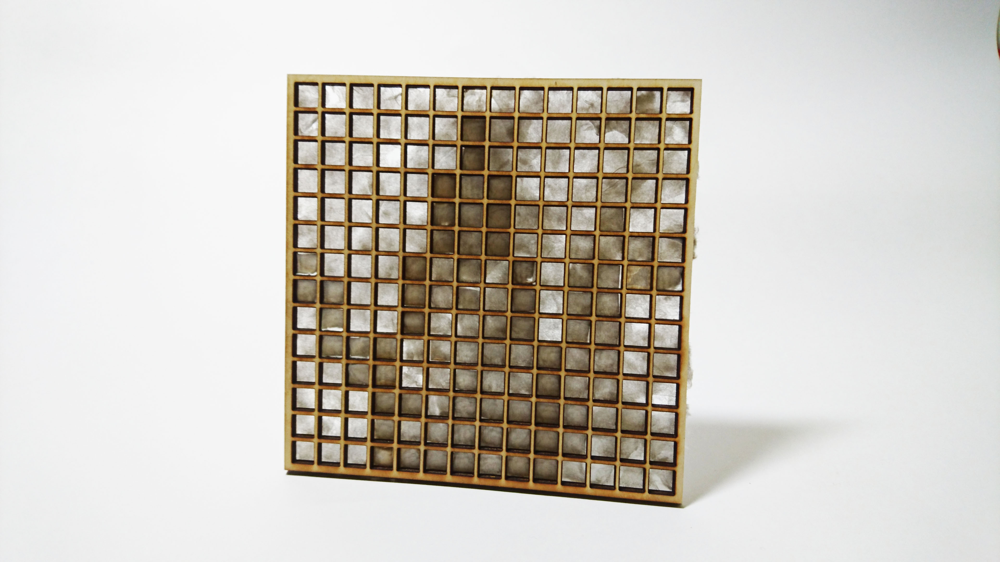

Japanese Paper Door Display

Japanese Paper Door Display [漉き紙障子ディスプレイ]
日本では古来から和紙を作るには紙漉きという技術を使われており、現在でもその紙漉きは伝統工芸として残っている。また、紙漉きでは主原材料であるパルプの量により光の漏れ具合を調節することができる。そして、私たちの身の回りでは、この紙漉きで作られた和紙は障子に使 用されることが多い。
障子は日本で伝統的に使われていた部屋の仕切りであり、和紙の特徴を引き継いでいるため、光を拡散させてぼやかしながら透過させる。 そしてその光を障子を通して拡散しぼやかしながら透過させることによって、障子をはさんで離れた空間は少しだけ向こうの様子を想像することで空間の向こうを知覚させる「やわらかい空間認識」をしている。
この障子に見立てた作品は一見ただの正方形がずらずらと並んでいるが、光を透かすとある生物が浮かび上がる。 子供のころに読んだ日本の昔話を思い出して ......
そう、「鶴の恩返し」の鶴である。
- Co-create with
- Soma Sakata, Mizuki Hamazaki
© 2020 ryo-simon-mf